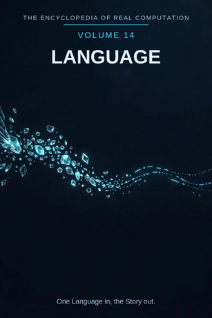

Chron.
The Encyclopedia of Real Computation

One Language in, the Story out.
Home domain: Dialectics
One Language in, the Story out.
◉ A Principle .... Language ◎ B Purpose ...... Meaning ◉·◉ A.A Alpha ...... the Speaker ◉·◎ A.B Cross ...... the Conversation △ X Primitive .... Words ⚙ Y Protocol ..... Grammar ⬢ Z Product ...... the Sentence ◐ i State ........ the Unsaid ⚖ j Condition .... the Listener ⊞ N Set .......... the Tongues ◷ h Time ......... the Telling ▣ C Context ...... the Community ▦ D Domain ....... the Literature ♥ E Emotion ...... the Tone ➤ F Intention .... Translation ↻ pi Cycle ........ the Retelling ➔ phi Step ......... the Phrase ⚄ e Probability .. Ambiguity • h-bar Planck ..... the Sound
Σ sigma Summation .. the Dictionary
◈ gamma Scale ...... the Register Δ delta Change ..... the Drift ⁂ sigma' Options ... the Dialects Ω Omega Answer ..... the Story
Every volume of this encyclopedia does the same work. The Prologue figures the subject whole. Then come twenty-four chapters, one per term, each doing four jobs in plain English: what the term means, where it sits in the computation, how it works on the volume's one running example, and what breaks without it. Then the Data, whole. Then the Crossings. Then the Sum. The running example of this volume is one short sentence - "The water is hot" - carried across three languages and watched carefully at every border.
Language: the system by which sounds and marks carry meaning between minds. Meaning: what a word or sentence brings across - the thing received, not just the noise sent.
◉ Language. ◎ Meaning = the root of Language: aimed at itself,
language asks what its sounds are for. ◉·◉ the Speaker: language turned on itself becomes a person who carries it. ◉·◎ the Conversation: language crossed with meaning - the exchange that carries the crossing. △ Words = Language parted over the Tongues.
⚙ Grammar = the function of the Words, the working applied. ⬢ the Sentence = Words times Grammar, the product, once the
Conversation has carried it to Meaning. ◐ the Unsaid = the root of negative Language: what the system leaves out, on purpose or not. ⚖ the Listener = the condition, element by element: a sentence stands while a listener takes it up. ⊞ the Tongues = the set: the language families of the earth. ◷ the Telling: language comes down through time. ▣ the Community: where language stands.
▦ the Literature = the Tongues crossed by the Study. ♥ the Tone =
the difference a landing makes. ➤ Translation = the intention that carries a context. ↻ the Retelling: every story is told again, changed by the telling. ➔ the Phrase: one step, said whole, stood on. ⚄ Ambiguity: the odds a sentence carries - how many readings it will bear. • the Sound: the least piece, one uttered noise. Σ the Dictionary: all of a tongue, summed as one.
◈ the Register: the scale of a sentence - how high or low it
speaks. Δ the Drift: language's own measure of change. ⁂ the Dialects: the spread of ways a tongue is actually spoken. Ω the Story: the answer language resolves into.
IF If Language to Meaning, then Words & Grammar is the Sentence, or the Unsaid while the Listener for the Tongues, through the Telling, in the Community, the Literature, the Tone, Translation, at the Retelling by the Phrase, with Ambiguity over the Sound - sum the Dictionary, scale the Register, change the Drift, options the Dialects - therefore the Story.
Stands below, after the chapters, figured whole: the Tongues crossed by the Study, twenty-four cells, and the six contexts.
The seven laws, run on this seed. Pythagoras: Language squared plus Meaning squared overlays the Community squared - the figure checks in the Where, the If, and the Data identically. Law of cosines: the tilt between language and meaning is set by context - between friends the angle is gentle, between strangers at a border it is nearly flat. Binomial: the middle term is the Conversation, two times over - the tongue shapes the meaning, the meaning reshapes the tongue. AM-GM: Meaning is the geometric mean between Language and the One. Log law: Register of the Sentence is Register of the Words plus Register of the Grammar - height adds where work multiplies. Complex modulus: the Unsaid is counted in the size of the system; a tongue is larger, not smaller, for what it pointedly leaves out. Triangle inequality: no route from Words to Sentence is shorter than the Conversation; skip it and you hold a word-list, labelled as such in the last term but one.
Language begins with the plainest objects there are after numbers - sounds - and works them by grammar, a short list of public rules any child absorbs without being taught. Its product is not the noise but the sentence: sounds worked by grammar and carried across a conversation, arriving in another mind as meaning. The field is honest about its condition: a sentence stands only while a listener takes it up, and every tongue keeps an unsaid - the things it has no ready words for, which its speakers feel as a pressure at the border. Its history drifts: words slide, sounds merge, and each retelling changes the story a little, which is not decay but the price of being carried by mouths instead of stones. And its finish is the story - not a report but a world handed over, the largest thing a sentence can grow into when a whole people keeps telling it. One Language in, the Story out.
What it means. Language is the system by which sounds and marks carry meaning between minds: a finite stock of noises, combined without limit, understood by strangers. It is the only field in this encyclopedia that the encyclopedia itself is made of.
Where it sits. Language is the Principle of this volume, the seed every other term grows from: Meaning is its root, the Speaker its self-product, the Conversation its cross.
How it works. Say one plain sentence: "The water is hot." Five words, no ornament, and it is true or false of the kettle in front of us. Everything in this volume is language doing that one trick completely - and being caught, on the way, changing its words, its grammar, and even its word for water as the sentence crosses borders.
What breaks without it. Every other volume in this encyclopedia is written in this volume's material: remove the Principle and the fields keep their objects and lose their way of handing them to anyone, including themselves.
What it means. Meaning is what a word or sentence brings across: the thing received. A parrot can send the sounds; meaning is what happens when a mind takes them up as being about something. It is what language is for - the difference between this field and music with words is nothing else.
Where it sits. Meaning is the Purpose, B = the square root of A: language aimed at itself extracts the demand to carry something, not just to sound. And B squared = A: a meaning fully carried and settled becomes part of the language itself - a new word, coined by use.
How it works. "The water is hot" means that the water - that water, the stuff in the kettle - is at a temperature that would scald. Everyone at the table receives that, wordlessly fast. The proof of the meaning is what happens next: nobody reaches for the kettle bare-handed. Meaning is cashed in behaviour.
What breaks without it. Without meaning, language is patterned noise - birdsong with grammar. The field would keep its sounds and lose its errand, and every sentence in this volume would be about nothing.
What it means. The speaker is language embodied: a person in whom a tongue lives - its sounds in the mouth, its grammar as reflex, its words stocked by a lifetime of hearing. A language with no speakers is not asleep; it is a specimen.
Where it sits. The Alpha, A times A: the field turned on itself. The same sentence held by a child and by a grandmother differs the way a fact differs in any field - in the company it keeps: echoes, exceptions, three registers for saying it, and the knowledge of when not to.
How it works. Hand "The water is hot" to a toddler and it is a warning repeated. Hand it to the cook who filled the kettle and it carries timing, intention, and a plan for tea. The words are identical; the speaker is the difference.
What breaks without it. Unowned language is a dictionary in an empty house: complete, correct, and read by no one. Tongues die exactly this way - not when their grammar fails, but when their last speaker does.
What it means. The conversation is the interaction term: language crossed with meaning, the actual exchange in which a sentence is built, received, and repaired. It is where the work happens - the middle term of the binomial, carrying force in both directions.
Where it sits. The Cross, A times B, counted twice: the tongue shapes what can be meant (you warn differently in different languages), and the meaning reshapes the tongue (a people that needs a word, coins one).
How it works. The sentence crosses the table: "The water is hot." "How hot?" "Too hot to hold." Three moves, and the meaning has been sharpened past anything the first sentence held alone. The exchange is not transport; it is manufacture - the meaning is made between the speakers, not delivered by one of them.
What breaks without it. With either factor at zero - sounds with no drive to mean them, or meanings with no tongue to carry them - the product is zero and nothing crosses. Monologue is this volume's name for that failure: all sending, no landing.
What it means. Words are the primitive material: one sound at a time, agreed, combinable. A word makes no claim by itself; it is the clay. Language parted over its tongues arrives first as words - names, doings, qualities.
Where it sits. X = A times N: the Principle spread across the Set. Every tongue receives the principle as its own words - English as water and hot, Spanish as agua and caliente, Japanese as oyu and atsui.
How it works. The sentence begins as five words: the, water, is, hot - and one silence where the pointing happens. Nothing has been claimed yet except that the words are worth arranging. The arranging is the volume; the clay is these.
What breaks without it. No primitives, no products: a field with nothing elementary to work has only sentences, and sentences cannot be checked from inside themselves. Dictionaries are this chapter, bound.
What it means. Grammar is what may be done to words: order them, bend them for tense and number, mark who did what to whom. The rules are learned by every child of the tongue without lessons - which is the whole point. A protocol nobody can state but everybody follows is still a protocol.
Where it sits. Y = f(X), with f the root of Meaning: the working is governed by the purpose - grammar is chosen, over generations, because it carries meaning with less wreckage, not merely because it is old.
How it works. The words water and hot can stand in a row a dozen ways; grammar picks "The water is hot" and refuses "Hot the is water." Two rules - order, and the little verb is doing the joining - and the row becomes a claim that can be true or false. The working ran ahead of the answer, as good protocol should.
What breaks without it. Words without a working stay inert: a word-list nobody may build with. Grammar is the field's hands - and its manners, since grammar is also how a tongue says please.
What it means. A sentence is a result that has been completed: words worked by grammar and carried across a conversation, arriving as a whole claim, order, question, or promise that can now be stood on - repeated, translated, written down, disagreed with.
Where it sits. Z = X times Y: the product, area-shaped - it has extent exactly as far as its factors reach, and it can always be factored back for audit: which words, which grammar, which conversation carried it.
How it works. "The water is hot" is the product entire: testable (dip a finger, carefully), portable (it survives being repeated by someone who never saw the kettle), and improvable ("too hot," "still hot"). It did not just report the kitchen; it put a claim into the world that the world can now check.
What breaks without it. Working that never sets into product is babble, not language. The sentence is where noise becomes inheritance.
What it means. The unsaid is language's shadow: what a tongue leaves out - the distinctions it has no word for, the things its speakers feel and must circle with five words where another tongue uses one. It is not a flaw in the building; it is the shape of the building, visible from outside.
Where it sits. i = the root of negative A: the state of the principle itself, counted in the system's size by the modulus law. The shadow is not outside language; every fluent speaker carries a felt sense of exactly where their tongue runs out.
How it works. English says "the water is hot" and leaves unsaid whether the heat is wanted - bath or burn, the sentence will not tell you. Japanese builds it into the word: oyu is hot water, already the kind you use; mizu, cold water, would make the sentence false by definition. One tongue's unsaid is the other's grammar. The shadow moves; it does not vanish.
What breaks without it. A language that hid its unsaid would claim to say everything, and the claim would fail at the first border, at the worst moment. Naming the shadow is what lets translators earn their keep.
What it means. The listener is the one who takes a sentence up: hears it, in his own tongue, and lets it land. Language does not hide the condition. It states it, because every sentence is "if heard, then this" - and honesty about the "if" is the condition of the whole.
Where it sits. j, the Condition: the root taken element by element. Each sentence stands while a listener stands ready; change the listener - a child, a foreigner, a tired friend at midnight - and the same words become a new, weaker sentence, or none. Verification here is granular: this utterance, this ear.
How it works. "The water is hot," said to someone facing away, kettle behind him, works. Said in English to a listener with only Japanese, the sentence stands in the air unlanded - complete, correct, and not yet language in the only sense that matters. The words did not fail; the condition did. That nameability is the condition working.
What breaks without it. Unstated listeners are smuggled conclusions. The speaker who checks his condition can be answered; the one who ignores it can only be loud.
What it means. The tongues are language's divisions: the great families - Indo-European, Sino-Tibetan, Afro-Asiatic, Niger-Congo, Austronesian, Dravidian, and their kin - each a whole way of cutting the world into words. Every tongue is the whole principle read in one direction.
Where it sits. N, the Set - the term everything is counted in: words are A times N, the domain is N crossed by the Study, the sum runs over N. The set is complete as this volume defines it and open underneath; tongues are still born (creoles, within living memory) and still die, which no other set in this encyclopedia does so visibly.
How it works. The sentence visits three tongues on its short walk: English keeps it flat and general, Spanish bends it - "El agua está caliente," where está marks a state, not an essence, and agua, a feminine word, takes el in front of its stressed a - and Japanese rebuilds the noun itself. One claim, three tongues, no borders crossed illegally: the set is a sorting, not a fence.
What breaks without it. Unsorted language is a heap of voices: all human, none findable, each traveller re-learning what the road between two villages costs.
What it means. Language arrives through the telling or not at all: grandmother to child, scribe to reader, recording to a listener not yet born. The field is a relay over uncounted generations, and its memory is double - tongues remember in mouths and in marks, and the two remember differently.
Where it sits. h, Time: the passage the whole figure moves through. Language's time has a special property: its cargo changes in the carrying, on purpose and by accident both. A tongue is the only inheritance that is spent by being given away and grows by being spent.
How it works. "The water is hot" has been said, in some tongue, at every hearth since fire was tamed. The sentence in front of us is this morning's copy of a million-year utterance - the warning at the centre of cooking. It arrives in this volume with its edge undulled and its wording entirely new.
What breaks without it. Language reinvented each generation would be gesture forever: the warning re-invented at every fire, never a word for it, its lesson kept by the burned and lost by everyone else.
What it means. The community is where language stands: its base context, the standing-place from which its domain is read. A tongue is not a private code; it is the common ground of the people who answer to it, and outside that ground its sentences are specimens.
Where it sits. C, the Context, first of the setting terms: contexts transform the domain (the table stands in the Data), and the difference a context makes is measured by the Tone, the next part's first term.
How it works. "The water is hot" is a warning in the kitchen, a finding in the laboratory, a promise in the bathhouse. The words never changed; their company did. Carry the sentence into a community that has never boiled water and it needs a paragraph of escort. That escort is context, doing its quiet work.
What breaks without it. Context-free language can be had - a phrasebook of it, in any airport. The field as a human enterprise stands in a community that shares the world the words point at, or nowhere.
What it means. The literature is language's whole territory: the tongues crossed by the study - every family in its four movements, from the question it asks to the teaching it hands on. The full table stands in the Data, twenty-four cells, every one figured.
Where it sits. D = N crossed by R: the set by the study. A tongue becomes territory only when the study moves across it; the domain is a crossing, never a list.
How it works. Read the sentence's own row-path: it is asked in Indo-European (the Shared Word), settled in its Fact (the Common Root), and handed on in its Teaching (the Comparison). The territory is one land; the example has walked three of its roads in three of its tongues.
What breaks without it. Tongues without a domain are a thousand solitudes, each re-deriving the others' sentences in private sounds. The domain is the peace treaty and the phrasebook in one.
What it means. The tone is the difference a sentence makes when it lands, measured the speaker's way: the same words can warn, soothe, boast, or plead, and the difference is carried not in the words but in how they arrive. Every community reads tone before it reads grammar, and children learn it first.
Where it sits. E, Emotion: the difference between contexts, C1 minus C0. Before the sentence, the room is uninformed; after it - said flat, said sharp, said gently - the room has changed three different ways from one set of words, and the size of the change is this term.
How it works. "The water is hot." Said flat, it is information. Said sharp, a child keeps his hands back for a week. Said gently, it is an invitation to the bath. The kettle does not know the difference; every listener does. That disproportion is tone, felt - and it is data, not decoration.
What breaks without it. Two utterances of one sentence are grammatically equal and humanly unequal: the one that lands is remembered and repeated; the one that does not is filed as noise. A field that cannot hear the difference keeps both and slowly says neither.
What it means. Translation is language's intention: the deliberate act of carrying a sentence out of one tongue into another, keeping what can be kept and knowingly paying for the rest. It is the most honest work in this volume, because it publishes its losses.
Where it sits. F, Intention: the operator that carries contexts - C1 = C0 + F. Apply translation and the same domain becomes the classroom's primer, the market's lingua franca, the border's negotiation. What survives the carrying is the claim; what is shed is the music, the unsaid, and half the tone.
How it works. The sentence carried into Spanish pays a toll: the flat is must become está, a state and not an essence - the water is hot now, not hot by nature, a distinction English never asked for. Carried into Japanese it pays again: the noun itself must declare the heat before the adjective speaks. The claim arrives every time. The claim is never all that was sent.
What breaks without it. Untranslated language dies at its own border: a thousand sentenced worlds, each sealed in its tongue, none portable. Translation is why one volume can serve all the others.
What it means. Language does not proceed in a line; it retells. Stories return as news, news returns as history, a warning returns as a proverb - the same ground, one telling later, each return re-voicing the old sentences in a living mouth. The cycle is the field's gait.
Where it sits. pi, the Cycle: the loop the figure runs, turning by steps. The retelling is also the field's memory policy - nothing is only said once; it is re-met at every age, and the re-meeting is where a sentence deepens into a tradition.
How it works. The hot-water warning is told to the toddler, told again to the apprentice cook, told again - by then as "mind the pan" - to the grandchild. Three turns of one cycle, one sentence, never once written down. The story that survives a thousand retellings is proof against everything except silence.
What breaks without it. A linear language would say each thing once, at one hearing, and the hearings would never agree with each other. The retelling is the agreement machinery.
What it means. A phrase is a piece of a sentence sized to a single stride: words grouped as one breath, one gesture of meaning - "the water," "is hot." Language climbs by phrases the way knowledge climbs by lessons; the step is a property of the climbing, not of the mountain.
Where it sits. phi, the Step: the advance at the cycle's turn. In the grammar, the cycle turns by the step - at the Retelling by the Phrase. Too small and speech drowns in single words; too large and the listener cannot follow, and an unfollowable step is a noise, not a step.
How it works. The sentence has one true joint inside it: between the thing and what is said of it - "the water" | "is hot." Cut there and a child can carry both halves. Every tongue cuts its sentences somewhere; where it cuts is its fingerprint. The phrase is where the breathing is stored so the road can be plain.
What breaks without it. Speech delivered as single leaps - whole paragraphs in one breath - would be believed or disbelieved whole, like weather. Phrases are how a sentence stays checkable by strangers.
What it means. Ambiguity is the odds a sentence carries: how many readings it will honestly bear. Language is the one field whose claims carry their odds inside the wording itself - "hot" by whose hand, "the water" in which vessel - and skilled speakers set the term on purpose: low for warnings, high for poems.
Where it sits. e, Probability: with Ambiguity over the Sound - every point of the field carries its odds printed beside it, in this volume as a spread of readings. The Conversation is the machine that adjusts this term; the Dialects of Chapter 23 are the settings a whole community has chosen.
How it works. "The water is hot" carries two readings at the kitchen table - too hot, or ready - and the cook's next sentence settles it. Delivered in a laboratory report, the same words would be sent back for numbers. Evidence narrows the spread; context is the verdict. The term keeps them separate.
What breaks without it. Without printed odds, a field cannot distinguish its instructions from its poetry, and obeys both with the same confidence until the poetry settles the account.
What it means. The sound is the least piece of language: one uttered noise, distinguished from its neighbours - the difference between p and b, between tone rising and tone falling. Everything spoken is sounds gathered; below the sound there is no speaking - there are noises a tongue has not adopted, and the sound remains the floor they stand on.
Where it sits. h-bar, the Planck term: the smallest resolution of the figure. The Sum of this volume is taken at the sound's grain - Omega's limit as the least piece shrinks: language's total is defined over distinguishable noises, and marks for them, all the way down.
How it works. The example was built on this piece from the first line: "hot" differs from "hat" by one sound, and the whole warning turns on it. In Japanese the sentence's first sound already carries the cargo - o- in oyu is an honourable prefix, politeness built into the least piece. The sound's whole job: to be the standard even its own rebels are stated in.
What breaks without it. No sound, no measure: speech without a least distinguishable piece is a hum. The grid of every volume in this encyclopedia stands on there being a smallest unit to address.
What it means. The dictionary is a tongue summed: all its words, all their settled readings, read as one body with one standard. A usage anywhere must cohere with the whole or be marked as new, foreign, or wrong; a private meaning in a corner is a draught in the whole house. That total accountability is what the summation operates.
Where it sits. sigma, Summation: the total taken over the Set, whole, every tongue's words gathered, none sampled. It is the inverse of the parting that made Words - the field breathes out into sentences and in into one dictionary.
How it works. The sentence's words belong to the dictionary, not to the speaker who used them: grammar audits them, usage houses them, and a contradiction anywhere in that chain - a word that means its opposite in the next valley - is everyone's errand by morning. The sum is a discipline before it is a book.
What breaks without it. Unsummed language is a federation of idiolects drifting apart - the historical state the written standard was built, painfully, to slow.
What it means. Register is how high or low a sentence speaks, in reach: the level of formality it claims and the company it keeps. Some sentences settle a kitchen; some - a handful per tongue - reorganise the language. Register is the scale that tells them apart, and it is a measure, not a ranking of worth: the plain true thing outranks the grand false one at every setting.
Where it sits. gamma, Scale: the translator of the figure. By the log law, the register of a product is the sum of the registers - the sentence's height equals the height of its words plus the height of its grammar, which is why formal grammar on plain words gives results out of proportion to both.
How it works. Five plain words - and the sentence's family reorganised tongues: the same claim, said at a christening, a court, and a campfire, is three sentences wearing one meaning. Inputs: a kettle. Register: everywhere the community goes, which is everywhere.
What breaks without it. Read at one magnification, the field cannot tell its kitchen talk from its law, and sends its students to polish both with equal reverence.
What it means. The drift is language's own measure of change: how a tongue's words and sounds slide across generations - vowels marching, words narrowing and broadening, meanings flipping entirely. It earns its place as this volume's delta twice over: it is the field's change-operator, and it is the reason no other volume's old texts can be read without this volume's help.
Where it sits. delta, Change: applied in the closing run after the sum and the scale are known - change read in full view of the whole. In the field itself, delta is revision as well: a tongue re-standardised after its drift is the same tongue, older, with the correction kept visible in its old books.
How it works. Let the sentence age: Chaucer's English would write it so his own grandchildren squint; the Spanish está was once two words settling an argument Latin started. The sentence's rate of change is slow at the hearth and fast at the border - change, measured honestly, from the example's own words.
What breaks without it. A language without its change-term describes a frozen people: sentences without tendencies, texts without expiry - and lends nothing to the volumes that study a moving one. This encyclopedia is written against drift and knows it: print is a brake, not a wall.
What it means. The dialects are language's open spread: the ways a tongue is actually spoken, valley by valley, trade by trade - each consistent, each a standing option the language keeps. They are printed in this volume as options, not errors: the spread of what the field may do next, since today's dialect is tomorrow's standard, regularly.
Where it sits. sigma-prime, the Options: last before the Answer, by the book's discipline. No answer in this encyclopedia is read until its spread has been shown; a sentence printed without its neighbouring dialects looks more final than the field is.
How it works. The hot-water sentence, walked across one country, changes its vowels at every river and its word for the kettle twice. All the versions warn equally well. The example's own family - every way of saying it within a day's walk - is a shelf of settled and open standing side by side.
What breaks without it. Hide the spread and the field presents itself as finished - a museum where a living crowd should be. The dialects are language's capital: the named shape of its next century.
What it means. The story is what language resolves into: not a report but a world handed over - sentences grown into a whole that a listener can live inside for an hour or a lifetime. It is the largest kind of answer and the oldest: before there were books there were stories, and the books are stories that learned to sit still.
Where it sits. Omega, the Answer: the limit of the whole figure, and its door back - the story shows the next sentence (Chapter 23 keeps them ready), the sentence roots the next language. The volume closes where the field reopens.
How it works. The answer is total and small: water, hot, said so a stranger can act on it. From that one settled sentence, teas are poured, baths are run, children are kept whole - and, gathered with ten thousand of its kin, histories are told. A knower holding a story is not finished; she is equipped - including with a lit map of what her tongue cannot yet say.
What breaks without it. Without a resolution, the computation turns and never lands: words listed, grammar run, conversations polished - and no point at which a people may say "this much is ours" and hand it on. One Language in, the Story out.
The Study runs in four movements: the QUESTION the family asks, the FACT it settles, the UNDERSTANDING it reaches, the TEACHING it hands on.
INDO-EUROPEAN ... Question: the Shared Word - Fact: the Common Root - Understanding: the Kinship - Teaching: the Comparison
SINO-TIBETAN .... Question: the Rising Tone - Fact: the Character -
Understanding: the Context - Teaching: the Recitation
AFRO-ASIATIC .... Question: the Three Consonants - Fact: the
Pattern - Understanding: the Root System - Teaching: the Chant
NIGER-CONGO ..... Question: the Class Marker - Fact: the
Agreement - Understanding: the Web of Classes - Teaching: the Proverb
AUSTRONESIAN .... Question: the Voyage Word - Fact: the Island
Cognate - Understanding: the Wide Family - Teaching: the Genealogy
DRAVIDIAN ....... Question: the Gathered Word - Fact: the Suffix
Chain - Understanding: the Old Stock - Teaching: the Poem
THE COMMUNITY (base) .. Emotion the Tone, Intention Translation gives THE LITERATURE.
THE CLASSROOM ......... Emotion Patience, Intention Teaching
gives THE PRIMER.
THE MARKET ............ Emotion Bargaining, Intention Trade
gives THE LINGUA FRANCA.
THE PAGE .............. Emotion Permanence, Intention Recording
gives THE TEXT.
THE AIR ............... Emotion Reach, Intention Broadcasting
gives THE BROADCAST.
THE BORDER ............ Emotion Caution, Intention Interpreting
gives THE NEGOTIATION.
This volume's roads to its siblings. To VOLUME 1: every volume in this encyclopedia is written in this volume's Words, Grammar, and Drift; the Book's Language row is this volume entire. To VOLUME 3 (Logic): the Sentence of Chapter 7, made exact, is that volume's Proposition - the least piece of the one is the clay of the other. To VOLUME 13 (Philosophy): the Term of that volume is this volume's Word with its definition audited; the Dialogue there runs on the Conversation here. To VOLUME 16 (Music): the Phrase and the Sound are shared ground - rhythm is grammar the body keeps. Every term of this volume holds an address on the great grid; the index of them stands in Volume 18.
THE TALLY LANE: 6 families - 24 domain cells - 6 contexts - 24 chapters - 1 running example, carried entire. THE SIGMA LANE: read whole, the volume sums to +1: one language, entire, its shadow counted and its spread shown.
ITS OPEN QUESTIONS (sigma-prime, carried to Volume 18): how many tongues will the next century lose, and what unsaid goes with each? - can a meaning cross a border entire, or only ever most of it? - whether a written standard can hold the drift, or only slow it - whether the last speaker of a tongue can be argued with in it, which its own Chapter 9 already answers: she cannot be replaced, and knowing that is part of its story.
One Language in, the Story out.
ADDRESS INDEX: this volume's terms stand at the Dialectics home domain of the great grid; full addresses in Volume 18. GLOSSARY: register - how high or low a sentence speaks. dialect - a tongue's local, consistent way of being spoken. cognate - words in different tongues born from one root. drift - the slide of words and sounds across generations. ICON TABLE: stands at the front of this volume, and of every volume, identical.